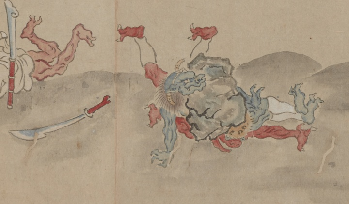

← 图鉴索引

青鬼ともつれ合い、下敷きになっている赤鬼。脇に刀が落ちている。
著作者：龍雲斎・大田南畝／出典：親書誌：U426_nichibunken_0453：［桃太郎絵巻］／日付：2024／資源識別子：U426_nichibunken_0453_0001_00022
Copyright (c)2010- International Research Center for Japanese Studies, Kyoto, Japan. All rights reserved.